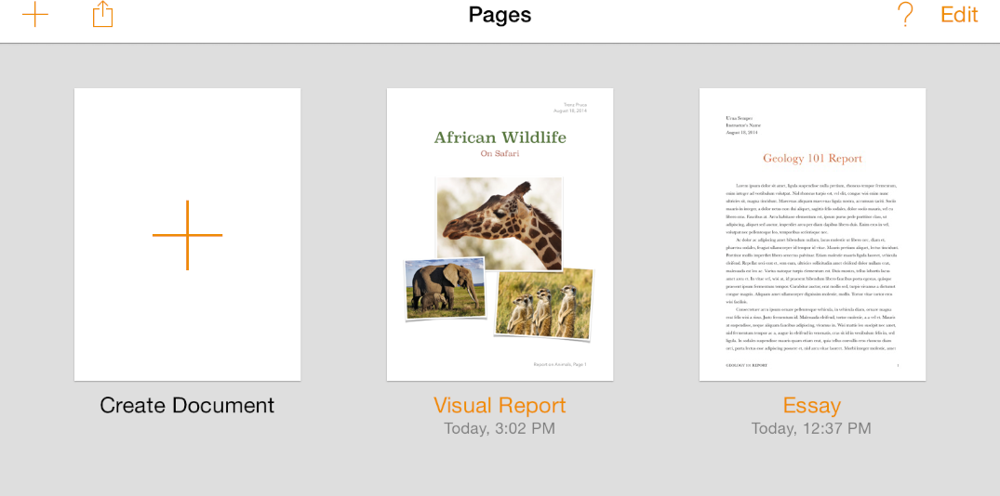

Integrating with iOS
Integrating with iOS means giving users a compelling, delightful experience that feels at home on the platform; it doesn’t mean creating an app that looks like a copy of a built-in app.
The best way to integrate your unique app with the platform is to understand the themes that motivate iOS—these are described in Designing for iOS—and figure out how your app should express them. As you do this, follow the guidelines in this section to help you give users the experience they expect.
Use Standard UI Elements Correctly
As much as possible, it’s a good idea to use the standard UI elements that UIKit provides. When you use standard elements instead of creating custom ones, both you and your users benefit:
Standard UI elements automatically receive updates if iOS introduces a redesigned appearance—custom elements don’t get updated.
Standard UI elements tend to offer various ways to customize their appearance or behavior. For example, all views (that is, objects that inherit from
UIView) can be tinted using thetintColorproperty, which makes it easy to add color to your app.People are comfortable with the standard UI elements, so they instantly understand how to use them in your app.
To take advantage of the benefits of using standard UI elements, it’s crucial that you:
Follow the guidelines for every UI element. When a UI element looks and works the way people expect it to, they can depend on their prior experience to help them use it in your app. You can find UI element guidelines in Bars, Content Views, Controls, and Temporary Views.
Don’t mix UI element styles from different versions of iOS. You don’t want to confuse users by displaying UI elements that look like they belong in a different version of iOS than the version that’s currently running on the device.
In general, avoid creating a custom UI element that performs a standard action. First, ask yourself why you’re creating a custom UI element that behaves exactly like a standard one. If you just want a custom look, consider changing the look of a standard element by using the UIKit appearance customization APIs or tint color. If you want a slightly different behavior, be sure to find out whether a standard element might do what you want when you adjust its properties and attributes. If you need completely custom behavior, it’s best to design a custom element that doesn’t look too similar to the standard ones.
Don’t use system-defined buttons and icons to mean something else. iOS provides many buttons and icons that you can use in your app. Be sure you understand the documented, semantic meaning of these buttons and icons; don’t rely on your interpretation of their appearance. (You can find the meaning of each icon in Toolbar and Navigation Bar Buttons and Tab Bar Icons.)
If you can’t find a system-provided button or icon that has the appropriate meaning for a function in your app, you can create your own. For some guidelines to help you design custom icons, see Bar Button Icons.
If your app enables an immersive task or experience, it may be reasonable to create completely custom controls. This is because you’re creating a unique environment, and discovering how to control that environment is an experience users expect in such apps.
Downplay File and Document Handling
iOS apps can help people create and manipulate files, but this doesn’t mean that people should have to think about the file system on an iOS device.
If your app helps people create and edit documents, it works well to provide some sort of app-specific document library view that lets them open an existing document or create a new one. Ideally, such a library view:
Is highly graphical. People should be able to easily identify the document they want by looking at visual representations of the documents onscreen.
Lets people make the fewest possible gestures to do what they want. For example, people might scroll horizontally through a carousel or grid of existing documents and open the desired one with a tap.
Includes a new document function. Instead of making people go somewhere else to create a new document, a document library might let them tap a placeholder image to create a new document.
For example, Pages displays the user’s documents, along with an easy way to create new documents, in a graphical library view.

If your app lets people use documents that they created in other apps, you can display a modal document picker view controller to help them access these documents. The document picker view controller can display documents in the user’s iCloud Drive in addition to Document Provider extensions, which are associated with other document-creation or document-storage apps. To learn more about Document Provider extensions, see Document Provider Extensions; to learn more about the document picker view controller, see Document Picker Programming Guide.
Give people confidence that their work is always preserved unless they explicitly cancel or delete it. If your app helps people create and edit documents, don’t require them to take an explicit save action. iOS apps should take responsibility for saving people’s input, both periodically and when they open a different document or switch away from the app.
If the main function of your app isn’t content creation—but you allow people to switch between viewing information and editing it—it can make sense to ask them to save their changes. In this scenario, it often works well to provide an Edit button in the view that displays the information. When people tap the Edit button, replace it with a Save button and add a Cancel button. The transformation of the Edit button helps remind people that they’re in an editing mode and might need to save changes, and the Cancel button gives them the opportunity to exit without saving their changes.
Be Configurable If Necessary
Some apps might need to give users a way to make setup or configuration choices, but most apps can avoid or delay doing this. Successful apps work well for most people right away, while also offering some convenient ways to adjust the user experience.
When you design your app to function the way most of your users expect, you decrease the need for settings. If you need information about the user, query the system for it instead of asking users to provide it. If you decide you must provide app settings that users rarely need to change, see The Settings Bundle to learn how to support them in your code.
As much as possible, offer configuration options in the main UI. Putting options in the main UI can make sense if the options represent a primary task and if people might want to change them frequently. If people are likely to change an app’s configuration only occasionally, it can make sense to put them in a separate view.
If necessary, help users go directly to your app’s settings in Settings. In particular, if you display a message that describes where to find your settings, such as “Go to Settings > MyApp > Privacy > Location Services,” replace the description with a button that opens that location in Settings. To learn how to enable this behavior, see Settings Launch URL.
Take Advantage of iOS Technologies
iOS provides a wealth of technologies that support common tasks and scenarios in ways that users expect. This expectation means that it’s almost always better to integrate system-supported technologies into your app than it is to design a custom approach.
Some iOS technologies—such as Multitasking and VoiceOver—are system features that all apps should incorporate. Others enable specific app functionality, such as handling tickets and gift cards (Wallet), enabling user purchases within an app (In-App Purchase), displaying in-app advertising (iAd Rich Media Ads), integrating with Game Center, and supporting iCloud.
Copyright © 2016 Apple Inc. All rights reserved. Terms of Use | Privacy Policy | Updated: 2016-03-21